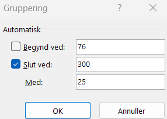
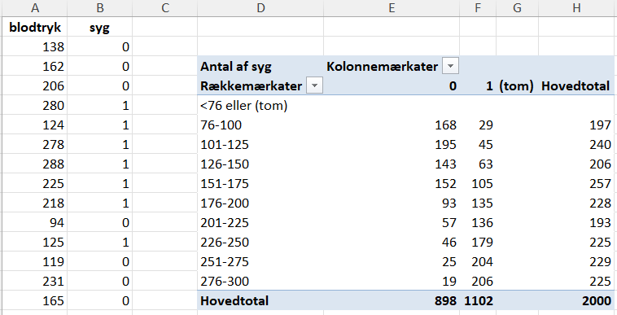

Forløbet kræver kendskab til:
- Invers funktion
- Den naturlige logaritme
Tidsforbrug: 10-12 timer.
Introduktion
Dette forløb anvender i stor udstrækning følgende materiale Logistisk regression .
Forløbet er inddelt i 6 dele + et eksamensspørgsmål med en cirka tidsangivelse til hver del.
Til sidst er der en kort lærervejledning, som elever kan ignorere.
Logistisk regression og odds
Forventet tid ca. 90 min.
- Læs afsnittet Logistisk regression og hjerte-kar-sygdom i materialet.
- Hent Excelfilen med de 2000 datapunkter.
- Genskab figur 1 i materialet ud fra de første 100 punkter og overvej, hvorfor det er en dårlig ide at bruge alle 2000 punkter. Du kan enten gøre dette i dit eget CAS værktøj eller i Excel. Hvis du ikke er vant til at lave grafer i Excel, er det nok lettest at anvende det program, som du normalt bruger.
- Inddel de 2000 datapunkter i intervaller som vist i tabel 1 i materialet. Dette kan f.eks. gøres vha. pivottabel i Excel som beskrevet nedenfor.
- Lav lineær regression ud fra data i tabel 1 og genskab derved figur 3. Husk at bruge midtpunktet af hvert interval. Brug det program, du normalt anvender til regressionen.
Hent Excel filen med de 2000 datapunkter.
Vælg “Indsæt pivottabel” i Excel og vælg dataområde og placering. Bemærk, at du skal gøre dette under menuen “Indsæt”, og hvis du finder “pivotdiagram” et sted, er det ikke det rigtige, det skal være pivottabel. Når du klikker på “Eksisterende regneark” skal du klikke det sted i regnearket, hvor du vil have pivottabellen placeret.
Indstil pivottabellen som vist på figuren nedenfor. Bemærk, at du skal trække Blodtryk og Syg ned fra listen for oven til Kolonner, Rækker og Værdier i bunden. Under Værdier vil der i første omgang stå “Sum af Syg”, så klik på pilen, vælg “Værdifeltindstillinger” og ændr det til “Antal af syg”.

Højreklik på én af værdierne for blodtryk i pivottabellen, vælg “Grupper” og vælg indstillinger for intervallerne.

Herefter skal det se således ud:

Forventet tid ca. 75 min
- Læs afsnittet “Odds” i materialet.
- Lav de tilhørende opgaver i materialet, dog ikke bonusopgaven.
- Lærergennemgang af, at \(O(p)\) er voksende vha. differentiation og monotoni.
Regressionsmodel og logit
Forventet tid ca. 45 min
- Læs afsnittet “Den logistiske regressionsmodel” i materialet.
- Lav de tilhørende opgaver i materialet. Hint til sidste spørgsmål - start med at overveje, hvilken værdi \(\mathrm{e}^{-a\cdot x+b}\) skal have, og derefter hvilken værdi \(a\cdot x+b\) skal have, og til sidst \(x\).
Forventet tid ca. 90 min
- Repetition af, hvad en invers funktion er.
- Læs afsnittet i materialet med fokus på at kunne isolere \(p(x)\) i \(logit(x)\).
- Efterfølgende fælles gennemgang på tavlen, da beviset er med i eksamensspørgsmålet.
Fortolkning og bestemmelse af parametrene
Forventet tid ca. 60 min
- Læs det meste af afsnittet “Fortolkning af parametrene i den logistiske regressionsmodel” i materialet. Stop efter eksemplet, der ender med en vækst på 22%. Det er ikke afgørende, at du får helt styr på dette afsnit, men det er vigtigt, at du prøver at tilpasse \(a\) og \(b\), så grafen passer til punkterne, og har en forståelse for, hvad der sker.
- Lav de tilhørende opgaver i materialet.
Forventet tid ca. 120 min
- Lærergennemgang af teorien.
- Læs derefter afsnittet “Bestemmelse af a og b med Excels problemløser-værktøj” i materialet.
- Anvend igen Excel arket med de 2000 datapunkter, og benyt problemløsning i Excel til at vise, at \(a=0{,}022\) og \(b=-3{,}9\) optimerer løsningen.
- Lav de tilhørende opgaver i materialet.
Forventet tid ca. 120 min
Differentialregning og logistisk regression
- Forklar om logistisk regression, herunder odds.
- Differentier \(O(p)= {p \over (1-p)}\) og vis derved, at \(O(p)\) er voksende.
- Isoler \(p\) i \(logit(p)\).
Lærervejledning
I del 1 kan inddelingen i intervaller givet også ske i eleverne eget CAS værktøj, hvis det foretrækkes. Der kan dog evt. være en pointe i at lade eleverne stifte bekendtskab med begrebet pivottabel i Excel uanset.
I del 2 i beviset for, at \(O(p)\) er voksende, kan differentiationen laves på forskellige måder, som det måtte passe bedst ind for det konkrete hold:
Vha. produktreglen og sammensat, idet kvotienten først omskrives til et produkt. \(O'(p) = p' \cdot {1 \over 1-p} + p \cdot ({1 \over 1-p})' = 1 \cdot {1 \over 1-p} + p \cdot {-1 \over (1-p)^2} \cdot (-1) = {1-p \over (1-p)^2} + {p \over (1-p)^2} = {1 \over (1-p)^2} > 0\)
Vha. kvotientreglen (enten bevist eller blot gennemgået). \(O'(p) = {p' \cdot (1-p) - p \cdot (1-p)' \over (1-p)^2} = {1 \cdot (1-p) - p \cdot (-1) \over (1-p)^2} = {1 \over (1-p)^2} > 0\)
I del 4 kan det overvejes, om eleverne selv, evt i grupper, skal læse udledningen, eller om den skal ske ved lærergennemgang.
I del 5 er det ikke nødvendigt, at eleverne forstår alle detaljer, en rimelig forståelse af ideen kan være tilstrækkelig.
I del 5 kan man godt lade eleverne læse hele afsnittet, men den sidste del er ikke så central, og ligner meget et kendt bevis fra eksponentielle udviklinger.
I del 6 anvendes black-box, men der kan f.eks. sammenlignes med Newton-Raphsons metode til bestemmelse af nulpunkter.